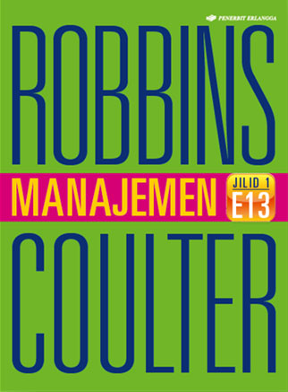
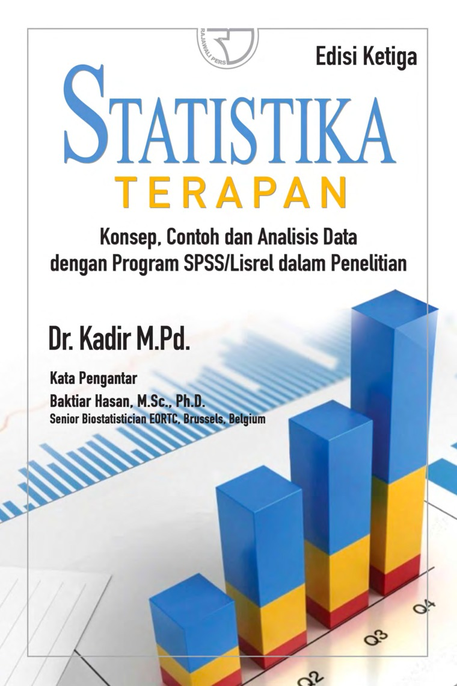
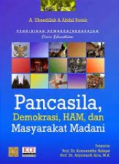

Daftar Buku
| No | Cover | Judul | Penulis | Status |
|---|---|---|---|---|
| 1 |  |
Menulis Secara Populer | Ismail Marahimin | Tersedia |
| 2 |  | Manajemen Jilid 1 | Robbins, Stephen P. Coulter, Mary | Dipinjam |
| 3 |  | Statistika Terapan Edisi Ketiga | Dr. Kadir M.Pd. | Tersedia |
| 4 | Financial Accounting 3e IFRS Edition | Kieso, Donald E, Weygant, Jerry J, Kimmel, Paul D | Tersedia | |
| 5 |  |
Manajemen Jilid 2 | Robbins, Stephen P. Coulter, Mary | Tersedia |
| 6 | Makroekonomi | Sadono Sukirno | Dipinjam | |
| 7 | Mikroekonomi | Sadono Sukirno | Dipinjam | |
| 8 |  | Pancasila, Demokrasi, HAM, dan Masyarakat Madani | A. Ubaedillah, Abdul Rozak | Tersedia |
| 9 |  |
Pengantar Manajemen | Ernie Tisnawati Sule, Kurniawan Saefullah | Dipinjam |
| 10 | ||||
| 11 | ||||
| 12 | ||||
| 13 | ||||
| 14 | ||||
| 15 |
Buku Per Semester
List Buku Semester 1
Daftar kumpulan buku-buku wajib pada setiap mata kuliah yang ada di semester 1.
Lihat SelengkapnyaList Buku Semester 2
Daftar kumpulan buku-buku wajib pada setiap mata kuliah yang ada di semester 2.
Lihat SelengkapnyaList Buku Semester 3
Daftar kumpulan buku-buku wajib pada setiap mata kuliah yang ada di semester 3.
Lihat SelengkapnyaList Buku Semester 4
Daftar kumpulan buku-buku wajib pada setiap mata kuliah yang ada di semester 4.
Lihat SelengkapnyaList Buku Semester 5
Daftar kumpulan buku-buku wajib pada setiap mata kuliah yang ada di semester 5.
Lihat SelengkapnyaList Buku Semester 6
Daftar kumpulan buku-buku wajib pada setiap mata kuliah yang ada di semester 6.
Lihat SelengkapnyaList Buku Semester 7
Daftar kumpulan buku-buku wajib pada setiap mata kuliah yang ada di semester 7.
Lihat Selengkapnya